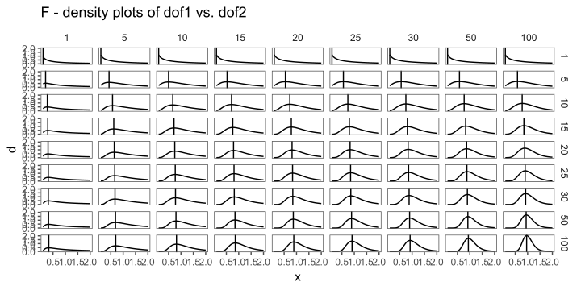
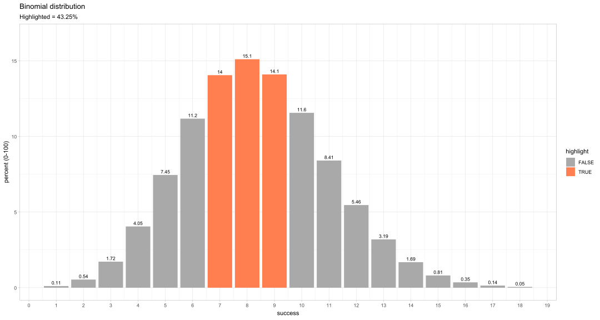

Statistical Distributions
Types of data
Nominal Data

Figure 2: Some example for nominal data.
Ordinal Data

Figure 3: Some example for ordinal data.
Discrete Data

Figure 4: Some example for discrete data.
Continous Data

Figure 5: Some example for continous data.
Emergence


Z - Standardization

\[\begin{align} Z = \frac{x_i - \bar{x}}{sd} \nonumber \end{align}\]

The drive shaft exercise - Z-Standardization

Figure 14: The standardized data of the drive shaft data.
Probability Density Function (PDF)
- there is no PDF for discrete variables
- can be interpreted as the relative likelihood
- is used to specify the probability of a random variable within a certain range
\[\begin{align} \varphi(x) = \frac{1}{\sigma\sqrt{2\pi}}e^{-\frac{1}{2}(\frac{x-\mu}{\sigma})^2} \end{align}\]

Likelihood and Probability
- Likelihood
- refers to the chance based on given evidence or assumptions, often used in statistical inference
- Probability:
- is a measure of the chance an event will occur, ranging from \(0\) to \(1\).


Chi2 - Distribution
- is a “new” distribution function
- arises from squaring a random variable
- is calculated with:
\[\begin{align} \chi^2 = \sum_{k = 1}^n \frac{(O_k - E_k)^2}{E_k} \end{align}\]

- handles categorical (nominal) data and is used in statistical inference in many ways
- the goal is to “convert” discrete (nominal) values to continous variables (counts in frequencies, making things measureable)
- Independence Test: Are two categorical variables independent of each other?
- Distribution Test: Are the observed values of two categorical variables equal to the expected values?
- Homogeneity Test:Are two or more samples from the same population (comparing frequencies)?

t - Distribution
- is another “new” distribution function
- is a generalization of the standard normal distribution
- “connects” the sample with the population via the t-score
- does not need the population standard deviation for computation
\[\begin{align} t_i = \frac{\bar{x} - \mu_0}{sd/\sqrt{n}} \label{tscore} \end{align}\]

Applications of the t-disitribution include:
Hypothesis testing (one sample t-test, two sample t-test, two sample t-test for paired samples)
Computing confidence intervals
Test significance of model parameters (against null model)
The drive shaft exercise - t-Distribution

Interconnections

Figure 20: The distributions are interconnected in several different ways.
Bionmimal Distribution
probability disitribution for discrete outcomes
n repeated trials.
two possible outcomes (e.g., success or failure).
probability of success remains the same
each trial is independent

Classroom example: Binomial Distribution
If we roll a fair six-sided die 10 times, how many times do you expect to get a specific outcome?
- 10 trials
- \(P?\) to roll a \(6\) (expected value)?
- record the number of times a specific outcome occurs
- repeat for 2-4 students


The drive shaft exercise - Binomial Distribution

Figure 24: The binomial disitribution and the drive shaft exercise.
The drive shaft exercise - Weibull distribution

Figure 27: The measured hours how long the drive shafts lasted in the test stand.
Poisson - Distribution

Figure 28: The poisson distribution with different \(\lambda\) values.